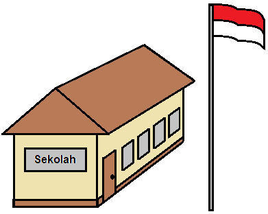
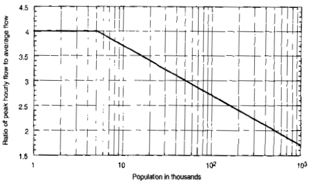

Rumus Yang Digunakan:
Dalam menentukan air limbah, dibagi menjadi dua jenis, yaitu air limbah domestik dan non domestik.
Air limbah domestik merupakan air limbah yang berasal dari pemukiman (air limbah rumah tangga), besarnya air bersih yang akan menjadi limbah dari konsumsi air bersih tiap orang dalam satu hari diperkirakan mencapai 70% sampai 80% dari penggunaan air bersih.
Air limbah non domestik merupakan air limbah yang dihasilkan dari berbagai unit fasilitas, seperti fasilitas pendidikan, fasilitas kesehatan (rumah sakit), dan fasilitas peribadatan (masjid), yang tentunya masing-masing fasilitas memiliki kebutuhan air yang berbeda-beda.
- Rumus= 80% × Q air bersih × jumlah penduduk.
Website Aplikasi ini menggunakan 80% sebagai ketentuan dalam perhitungan air limbah domestik dan Q air bersih sebesar 200 liter/orang dalam sehari.

- Rumus= Σ fasilitas pendidikan × Σ total murid × Q air bersih.
Website Aplikasi ini menggunakan Q air bersih fasilitas pendidikan sebesar 10 liter/murid.hari sebagai ketentuan.

- Rumus= Σ fasilitas kesehatan × Σ bed × Q air bersih.
Website Aplikasi ini menggunakan Q air bersih fasilitas kesehatan sebesar 200 liter/bed.hari sebagai ketentuan.
- Rumus= Σ fasilitas peribadatan × Q air bersih.
Website Aplikasi ini menggunakan Q air bersih fasilitas peribadatan sebesar 3000 liter/unit.hari sebagai ketentuan.
- Rumus= Q Fasilitas Pendidikan + Q Fasilitas Kesehatan + Q Fasilitas Peribadatan.
Q Total Non Domestik didapatkan dengan cara menjumlahkan seluruh Q air limbah dari fasilitas-fasilitas non domestik.
- Rumus= Q ave domestik + Q total non domestik.
Q Ave Total didapatkan dengan cara menjumlahkan Q Ave Domestik dengan Q Total Non Domestik.

- Rumus= Q ave total × fpeak.
Cara menentukan Faktor Peak ialah dengan melihat besarnya jumlah populasi (penduduk), lalu sesuaikan berdasarkan grafik.

- Rumus= Luas area × faktor infiltrasi ÷ 86400
Cara menentukan Faktor Infiltrasi ialah dengan melihat luas area atau wilayah (dalam satuan ha), lalu sesuaikan berdasarkan grafik.
- Rumus= Q peak + Q infiltrasi.
Debit Total didapatkan dengan cara menjumlahkan Q peak dengan Q Infiltrasi